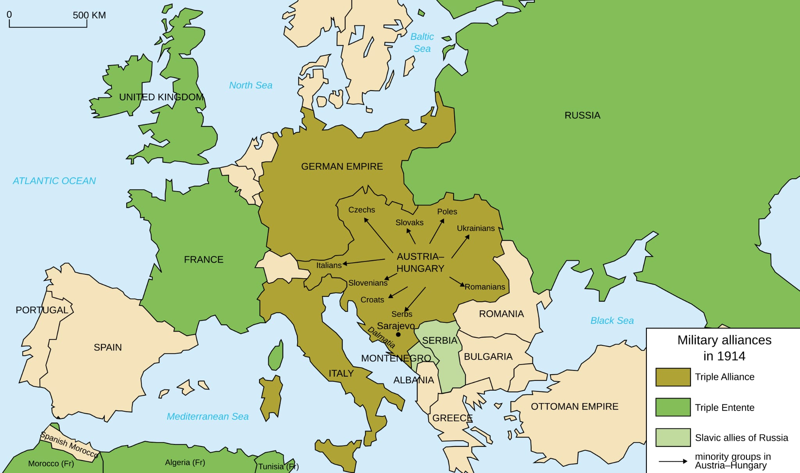

Pirmais pasaules karš sākās 1914. gada 28. jūnijā ar Austroungārijas troņmantnieka Franca Ferdinanda slepkavību Sarajevā. Austroungārija pieteica karu Serbijai (28. jūlijā), un alianšu sistēma iesaistīja lielvalstis: Krievija atbalstīja Serbiju, Vācija - Austroungāriju, pieteicot karu Krievijai un Francijai. Lielbritānija iesaistījās pēc Vācijas iebrukuma Beļģijā.
Rietumu frontē karš sākās ar Vācijas uzbrukumu caur Beļģiju, saskaņā ar Šlīfena plānu, lai ātri sakautu Franciju. Sākotnējā ofensīva tika apturēta Marnas kaujā, un sākās ierakumu karš. Frontē nostabilizējās pozīcijas starp Vāciju un Antantes spēkiem (Franciju, Lielbritāniju).
Austumu frontē Krievija sākotnēji iebruka Austrumprūsijā un Galīcijā. Vācieši sakāva Krieviju Tannenbergas un Mazūru ezeru kaujās, bet Krievija ieņēma Galīcijas daļu. Frontē bija kustīgs karš ar lieliem zaudējumiem.
 Vairāk Informācijas